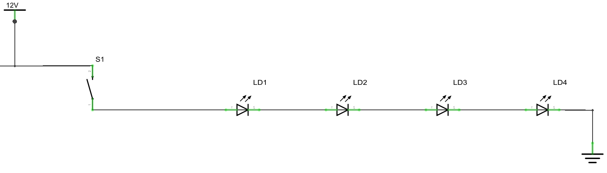
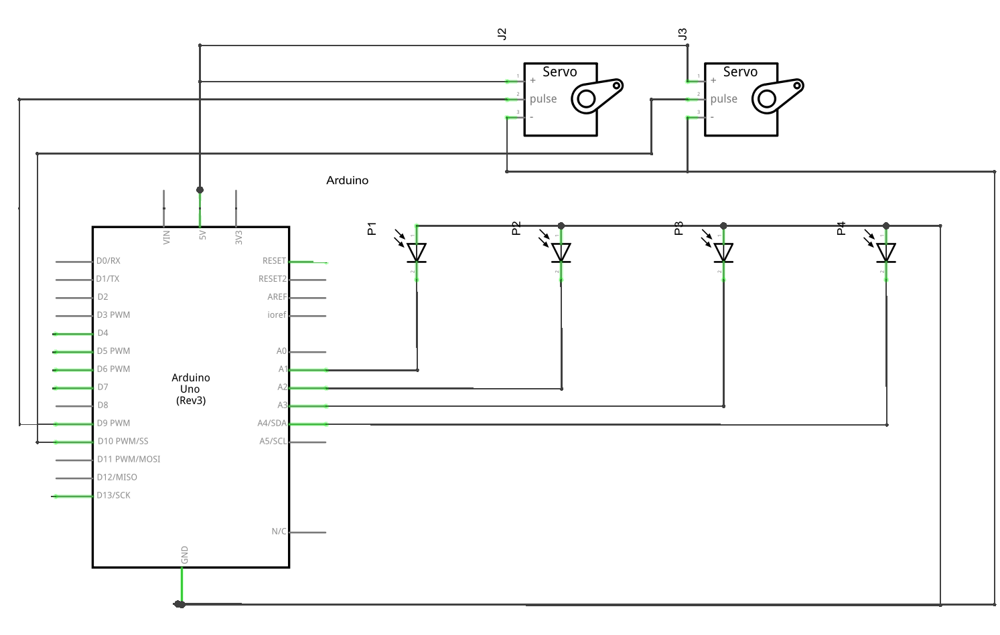
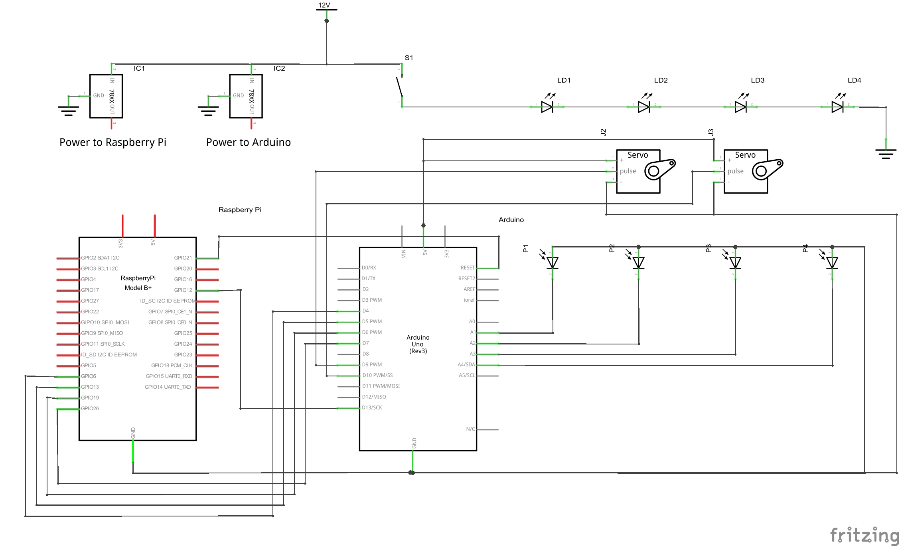
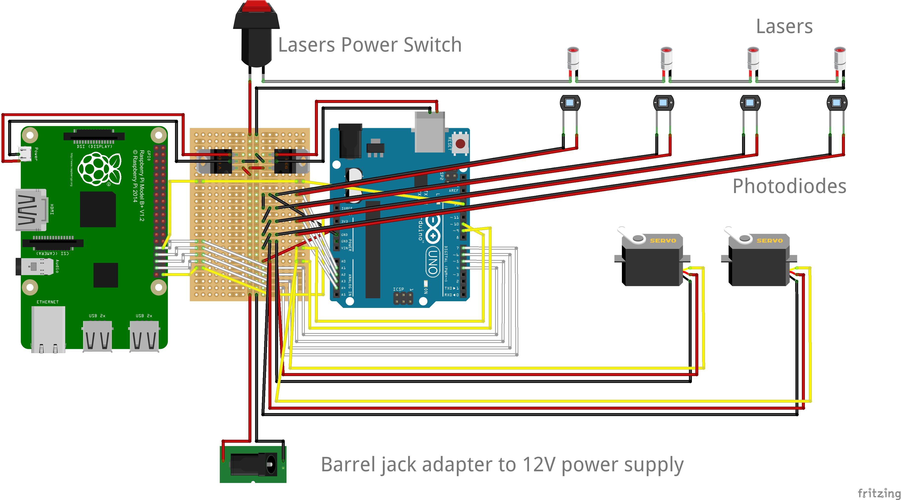

MECHANICAL SUBSYSTEM
"A detailed description of your mechanical design (CAD images/renderings are appropriate) and any necessary analysis."
ELECTRICAL SUBSYSTEM
The main electrical components are the lasers, the photodiodes to detect breaks in the lasers, and servos. These are all interfaced with an Arduino Uno and Raspberry Pi B+. You can read more about the Arduino and Raspberry Pi code in the firmware section.
Lasers
Our gameplay is built around the four green laser modules, which are installed along the wall at regular intervals. Each laser requires 2.5V-4.5V and 300mA, so we wired the four lasers in series to our 12V 5A DC power supply. This supplies each of the lasers with 3V, and more than enough current. The lasers are also wired in series with a mechanical push-button as a safety on/off switch, so that they can be controlled separately from the rest of the electronics. A circuit diagram of just the lasers and pushbutton is below:

Photodiodes and Servos
In order to detect when the laser beam has been broken, we added photodiodes next to each of the lasers. When the laser beam is not broken, it reflects off a piece of retroreflective tape at the end of the beam, which reflects a small circle of scattered light back around the laser. As a result, the photodiode is also lit. However, the scattered light is blocked when the laser beam is obstructed, so the photodiode is dark. Photodiodes produce a current by absorbing photons, so more light on the photodiodes correlates to a higher current and voltage. We read this voltage through the analog input of the arduino, and used the readings to analyze whether the laser beam had been broken. You can read more about this analysis in the firmware section.
Two of our lasers are mounted on servos to add moving beams to the game. The servos are powered and controlled through the Arduino, and move at a fixed rate over a limited range of angles. Both of these parameters are set in the Arduino code. In order to control difficulty, we can control whether or not the servos move based on a digital signal from the Raspberry Pi. When the Arduino receives a high voltage from the Pi in pin 13, then the Arduino will move the servos.
This part of the circuit diagram shows the connections between the photodiodes, servos, and Arduino.

Hardware Communication
We are using both the Arduino and Raspberry Pi as onboard processors, because the Pi is necessary for communication to the web-app, while the Arduino is necessary for analog input readings. Since the main gameplay is controlled through the Pi, we are using hardware connections to communicate between the Arduino and Pi. Since the sensors are an analog input, they must be read through the Arduino. Then, each time the sensors detect that a laser beam has been broken, the Arduino sends a high digital voltage to the Pi. In addition, the Raspberry Pi has a digital output pin to the Arduino to control whether the servos should be moving. The Raspberry Pi is also connected to the reset pin of the Arduino, so that the sensors can be re-calibrated at the beginning of each game. As a dependency of this communication, the ground on the Arduino and Pi must be connected for a common reference point.
Power
In order to make the laser maze a stand-alone module, all the power for the electrical components needed to be supplied through a single wall outlet rather than USB inputs. We used a 12V 5A power supply to convert the wall outlet power to DC, which is necessary for all the electric components. The 12V is used directly for the lasers. However, both the Raspberry Pi and the Arduino need 5V through a micro-USB and USB-B cable respectively. We used 5V voltage regulators to step down the 12V to 5V. The voltage regulators have a maximum amperage of 1.5A, so we needed to use two separate voltage regulators in order to have enough current for both the Arduino and Pi. The Arduino draws between 0.5A and 1A, which is comfortably within the current range of these voltage regulators, and allows enough of a margin us to drive the servos off the Arduino. The Raspberry Pi uses closer to 1.2A, so it is drawing current at the upper range of the voltage regulator. We cut two USB cables to connect the output of the voltage regulators to the power connections on the Pi and Arduino.
Installation
The full system circuit diagram (from combining all the previous schematics) is below:

We are mounting all of the components in between one of the double walls of the laser maze box. Therefore, we combined all the electrical components onto a single proto board that connects the Raspberry Pi, Arduino, lasers, sensors, and servos. A labelled circuit layout is below.

FIRMWARE SUBSYSTEM
Our project has firmware running on both the Arduino and Raspberry Pi. The primary function of the Arduino is to read in the analog values of the sensor readings and control the servos. The Raspberry Pi controls the main game play by using python to broadcast a web-app on its server. The Pi also reads in the signals from the Arduino, to update the game state when lasers are broken.
Arduino - Sensor Readings
Since the Raspberry Pi cannot take in analog inputs, the Arduino analyzes the analog input from the sensors and puts out a simple high/low value depending on whether the laser has been broken. The Arduino continuously reads in sensor values from each of the photodiodes through different analog pins. A laser is considered broken if the voltage reading from the sensor drops below a certain threshold voltage. However, the threshold voltage is dependent on which laser is being measured (because there are irregularities in laser brightness), and also dependent on the environmental light conditions. Therefore, the threshold values are re-calibrated at the beginning of each game based on the readings of each sensor while the lasers are all unbroken. Once the sensor value drops below the calibration value by more than a certain margin (a hard-coded variable), the Arduino register a "break" in the laser.
We also conducted some software filtering on the sensor values to account for irregularities and noise in the readings. The Arduino stores a history of the previous 10 raw sensor values, and then calculates the average of those values. The average is then compared to the calibration value, and which determines whether the laser beam has been broken.
Once the Arduino detects that a laser has been broken, it sends a high voltage signal to the Raspberry Pi through the corresponding digital out pin. The Arduino will send a high signal for at least half a second after the laser is broken, and will continue to put out a high voltage if a laser is broken for an extended period of time. This is because the Pi only samples for a signal at intervals of approximately 0.25 seconds, so the output voltage must be high for long enough for the Pi to detect the break.
Arduino - Servo Control
The Arduino also controls the servos, because the Arduino receives enough excess current from the voltage regulator to drive them, while the Raspberry Pi is already using close to its maximum current. The servos sweep through a pre-defined range of positions such that they follow the strip of retroreflective tape on the opposite wall. Because the servos must change position once every loop iteration, the sweeping cannot be done in a for-loop because this would pause all sensor readings for the duration of the sweep. Instead, the servos change position with a global variable that tracks and increments the servo position with each loop iteration. In order to have the servos controlled by the Raspberry Pi, the servos only run a continuous sweep if they receive a high digital input from the Pi.
Access our GitHub repo here.
SOFTWARE SUBSYSTEM
"A detailed description of software design with links to complete source code (github or other repository is helpful). Please be sure to include a list of all external software dependencies (eg. OpenCV, Google Voice API, etc.)."
We used Flask to generate a web app that initiates the gameplay, keeps track of and displays the play time, and stores and displays the best times for completion of the Lazer Maze.
Our time database is constructed using SQLite3, and the website appearance is creating using HTML, CSS, and JavaScript.
Access our GitHub repo here.